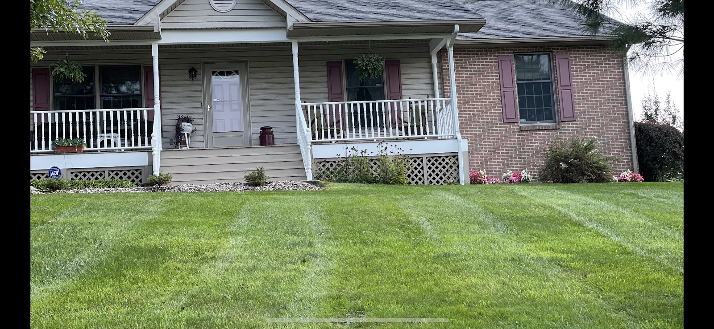
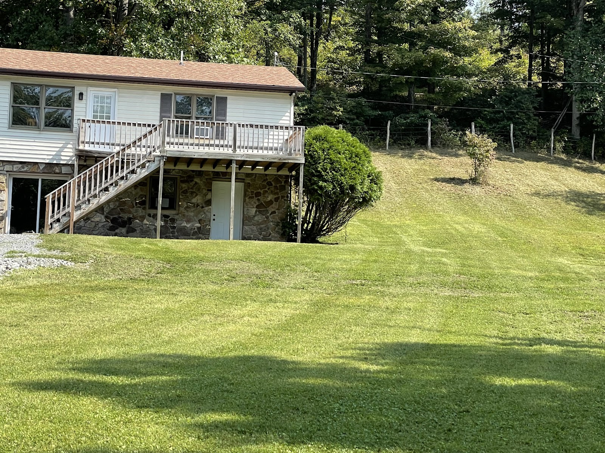

Beverly · Elkins · Mill Creek, WV
A neat lawn, kept neat.
By Studer’s.

Services
What we handle
01
Lawn mowing & maintenance
Regular and one-off mowing, edging and trimming to keep your property looking sharp through the season.
02
Weed control
Targeted weed treatment to keep lawns and beds clean and healthy.

By the numbers
- Customer rating
- 5.0 / 5
- Reviews
- 17
- Service area
- Beverly, Elkins,
Mill Creek - Estimates
- Free
Hours & location
When to reach us
- Mon – Sun
- 8:00 AM – 9:00 PM
58 Hollister Drive, Beverly, WV 26253
Get directions